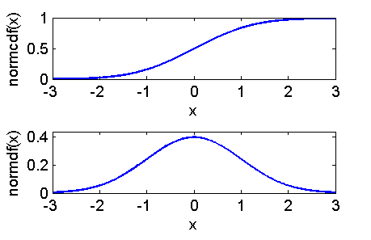

Contents
function demo_randn
demo_randn: Demo for the use of randn
Generate X ~ N[0,1]
randn
ans =
-0.4326
Generate a new sample X ~ N[0,1]
randn
ans =
-1.6656
Generate a matrix with M rows and N columns of X ~ N[0,1]
M = 3;
N = 5;
randn(M,N)
ans =
0.1253 1.1909 0.3273 0.7258 -0.1364
0.2877 1.1892 0.1746 -0.5883 0.1139
-1.1465 -0.0376 -0.1867 2.1832 1.0668
Plot pdf and cdf
nPlot = 1000;
alpha = 3;
xPlot = linspace(-alpha,alpha,nPlot);
figure(1); clf
normalPdf = normpdf(xPlot);
subplot(2,1,2);
plot(xPlot,normalPdf)
xlabel('x'); ylabel('normdf(x)')
axis ([-alpha alpha 0 1.1*normpdf(0)]);
normalCdf = normcdf(xPlot);
subplot(2,1,1);
plot(xPlot,normalCdf)
xlabel('x'); ylabel('normcdf(x)')
axis ([-alpha alpha 0 1.01]);
